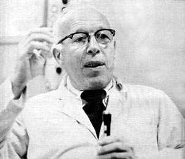

Dr. Rene Dubos, winner of the 1969 Pulitzer Prize, first gained international recognition over twenty years ago when he demonstrated the feasibility of obtaining germ-fighting drugs from microbes. A native of France, Dr. Dubos has lived in the United States since the age of 24 and is currently a dynamic leader in the fight to save the environment. Dr. Dubos is a professor at The Rockefeller University in New York City and this interview was conducted in his office there by Allen Richards.
"We behave often as if we were the last generation to inhabit the earth, " reads the poster in Dr. Rene Dubos' office at Rockefeller University in New York City. The optimism that we may change such behavior is felt as a vital force when entering the office.
Dr. Dubos, last year's Pulitzer Prize winner for his book, "So Human an Animal" (which shows that environment determines what people become), is one of the few ecologists today who chooses to emphasize that there are ways to salvage the already-polluted world Unlike his colleagues, Barry Commoner and Paul Ehrlich, Dr. Dubos refuses to frighten people by projecting ecological disasters. Instead, he tries to relate what has been done and what we can do to correct the environmental trespasses.
Most recently, Dr. Dubos has been concerned with an ecological success in the Jamaica Bay area near New York City's Kennedy Airport. There, what once was a dumping ground for city garbage has been miraculously transformed into a beautifully landscaped sanctuary for birds.
Last month, however, a controversy arose over plans for extending a runway of Kennedy Airport into the reclaimed portion of the bay to alleviate congested air traffic. This would surely destroy the area once again. Dr. Dubos publicly took a strong position against the extension, and the decision has been stalled and made uncertain.
The following interview with Dr. Dubos contains ideas and examples that should prove helpful in combating pollution in your own area. For more of this particular brand of inspiration, check your local TV listings. Dr. Dubos will be making many appearances on national television during the coming year.
PLOWBOY: An ecological reconditioning program has occurred near Kennedy Airport in the Jamaica Bay area. Could you comment on this project, and offer what you think is the value of the program?
DUBOS: I think the Jamaica Bay adventure-and it is an adventure-is probably the most complete and unexpected success story of the whole ecological movement in the United States at the present time. That is the reason why I've taken such a strong position on it.
Jamaica Bay was used for many years-perhaps fifty, I'm not certain-as a dumping ground for New York City. It was a gigantic dump. The bay is about one-half covered by the garbage of New York City. That sounds awful, and it is. There is no doubt that it has completely spoiled the waters of the bay. It is one of the most polluted environments in New York City. Progressively, the junk . . . the garbage, settled down and formed a series of islands in the bay. Artifical islands completely made by garbage.
Then there was an employee of the Park Department: A new man named Herbert Johnson took the position and decided that something should be done about that area. Instead of just doing only what he was supposed to do, he took it upon himself to collect seeds of different kinds of plants and trees: Pines, bayberries and all sorts of vegetation. He actually planted the seeds with his own hands. He planted the trees, the bayberries, the grasses. And soon, what was once just a dump, has become a tremendous, collection of different plants which are growing successfully in the bay area.
Once the plants began to grow, they attracted birds. All kinds of birds. Tremendous flocks returned to the area. And not just ordinary birds like ducks, but also many birds-such as the Snowy Egret-which had disappeared from the New York region.
So there we are with a situation that appeared to be one of the worst examples of degradation of the environment in a large city. Through the persistence and initiative of a state employee a miracle has occurred: The creation of a beautiful, ecologically interesting and-apparently-very vigorous bird sanctuary.
PLOWBOY: What has happened to the water itself? Has it been decontaminated? Has the presence of the plantlife and the wildlife helped to purify the water in any way?
DUBOS: When I was there last week, several fishermen told us that now they are beginning to catch fish that they used to catch fifty years ago. The fish are beginning to return. The development of the plantlife out of nothing has caused the return of the fishlife. Certainly the water is still polluted and has not been returned to ideal conditions. But what I find of such immense importance is that right here in front of us in New York City, is a demonstration that just as well as man can destroy the environment, he can create desirable environments.
PLOWBOY: There seems to be some sort of sick irony to the story in Jamaica Bay. It was first destroyed by man's stupidity and waste. Now it is beginning to be reconditioned and made liveable for creatures once more. But man appears to be on the verge of wanting to destroy it again. The people who want to extend the runway of Kennedy Airport into the bay just don't seem to realize-or, if they do, they don't seem to care-that such a move would only alter the situation back into a deathlypolluted, disgusting area. It is very frustrating to me because we know now that places such as Jamaica Bay can be revived. But the men with the money just don't give a damn and will do anything they please even at the risk of selfdestructing ourselves.
DUBOS: Yes. This case, this situation, is a very important one because it is this creation by MAN of something that was once a shame on the city.
The reason I am taking-and took, last week-the position against the people who want to extend the runway into the bay is because the National Academy of Sciences, of which I am a member, appointed a special committee to make an ecological study of Jamaica Bay. But this committee was formed for the purpose of learning if the extension of the runway would damage the bay . . . and that irritated me immensely.
I refused to serve on the committee because one doesn't have to be a member of the National Academy of Sciences to know that Kennedy is crowded. And one doesn't have to be a member of the National Academy of Sciences to know that if you run airplanes over the bay you will kill the birds. Therefore, I consider this a prostitution of science, so to speak-this using the names of famous people to provide a kind of information that we already have or that is irrelevant to the issue. And this issue would eventually be decided by a political consideration anyway. That is why I refused.
PLOWBOY: Yes, the misuse of politics always seems to hamper growth. In this case, it could obliterate life. Do you think they will pass the bill to extend the runway?
DUBOS: I'm beginning to have some hope that they will not. Some of us have created enough agitation and I have used the words publicly, PROSTITUTION OF SCIENCE, on purpose because I think this is a very dangerous precedent to set-that of using the pretext of some kind of scientific knowledge as being relevant to the political decision. I have some kind of hope. We shall see.
PLOWBOY: If the Jamaica Bay area receives sufficient recognition and the runway is not allowed to destroy the reclaimed area, do you foresee similar projects occurring elsewhere? Do you think this can be the answer to returning the environment to its proper state?
DUBOS: Most of the environment movement at the present time is directed at describing the environmental disasters of this country. This is what Barry Commoner has made himself so famous for. He and others, such as Dr. Paul Ehrlich, certainly have described a real situation. But, even though I have been a part of that movement, I have come to see that; psychologically, it is a very dangerous approach. If you talk only of disasters as Barry Commoner and Paul Ehrlich do, people become tired. They don't listen to you and, soon enough, no one will pay attention to you.
So what I look for are success stories. I show what has been done, what has worked. If we don't do this we are destroying something which we have done.
PLOWBOY: Could you mention some other success stories, and tell me how they were done?
DUBOS: I quote the example of London very often. London's story is of great importance to the history of the ecological movement. London was the worst polluted city in the world and has been the worst polluted city in the world for 150 years, since the Industrial Revolution. In 1952 there was, in that city, a terrible smog that killed 4,000 or 5,000 people within a week. Because of that disaster, the London City Council was in a position to enforce laws which everyone knew could be formulated, but for which there had been no support because people had been indifferent.
The Clean Air Act in London was formulated in 1956 and went into operation in 1957. It was enforced, and now one sees the results. Last year was the first year that one could catch fish in the Thames. And, for the past two years, there have been birds in the parks of London that haven't been there since the times of Shakespear.
There was an extraordinary document that was published in NATURE, the most eminent of scientific journals in England, which shows that the amount of sunshine striking London is 50% higher than it was ten years ago. So it seems to me that to publicize this example is of enormous importance because it puts our cities to shame for not doing the same thing.
There is another marvelous success story in this country in Lake Washington, Seattle. It is a very large lake on the outskirts of Seattle and it was almost as bad-or, perhaps, as bad-as Lake Erie: Completely contaminated with algae and all the junk with which we are familiar.
But a group of citizens managed to mobilize public opinion and eventually they succeeded in floating bond issues. About six years ago, after several failures, they succeeded. They acted on and created a whole system of sewerage control for the whole area. The remarkable thing is that, after six years, Lake Washington has returned to exactly the same condition it was in twenty years ago.
PLOWBOY: Once again, this is a great example of how nature can be regenerated. But it's also a good example of the way our governments-caught up in the binds of their system-either wait until disaster strikes or until they are provoked and challenged by concerned citizens. These are optimistic examples . . . but that sick, ironic feeling still persists. I mean, it's good that some action has been and is being taken . . . but when you think about how much misery and how many near-holocausts occur before the governments do anything, one can really be discouraged and enraged by the whole system.
DUBOS: That is why these success stories are of such immense importance. We should publicize these successes . . . the feeling that there is a resilience in nature . . . that, if we are willing to take the position and act, then we could reverse the present situation. Barry Commoner says that we have 25 years left of grace-and if we don't act within that time, then it is irreversible.
PLOWBOY: Some say it is four years.
DUBOS: Paul Ehrlich says four or five years. Well, I'm much older than they are, and I'm more familiar with all the accidents of nature and it makes me more optimistic. I strongly suspect that my optimistic pole is a political pole.
PLOWBOY: That's being pretty optimistic. Political poles aren't always prudent and humane.
DUBOS: If you tell people London has done it, then why shouldn't we do it? If you tell them Lake Washington has done it, why shouldn't we do it?
PLOWBOY: I f that supposition is true then the wetland areas of New Jersey and Long Island-especially Suffolk County-can be saved from pollution. But just this morning I read in The New York Times that those wetland areas are being polluted . . . and the word "spotty" was used to describe their polluted condition.
DUBOS: With the wetlands of New Jersey I've decided that-politically-it is more creative to say that it has been done, therefore we can do it. I don't doubt that the situation is New, Jersey is terrible, and this is bad because the wetlands are especially sensitive. Once the toxic substances get into the water, they kill all the small life which the other animals depend upon. So then you have to recreate the whole cycle and that is often very complicated.
The Toxic substances in New Jersey are chiefly oils and petroleums which persist for so long. It can be very bad. That is why-and let me repeat myself-Jamaica Bay is such an extraordinary fact. I would never have believed that it could return the way it has. Yes. That has to be pushed upon people . . . the knowledge that we can do it. We know how to recreate life.
Nobody has yet given a total philosophical approach to a definition of environment. The word "nature" is a very treacherous one. Most people are working under the notion that nature is something that God made, to use the figure of speech. But all nature is practically man-made.
PLOWBOY: How do you see that?
DUBOS: The perfect example is England. There isn't one blade of grass which is God made. It's all man-made. England was completely covered by forest, except for the Salisbury plain. All slopes, fields and moors were made by man. This is true of Long Island too, because it was covered by forest also. Nature really is something man has created out of the wilderness.
The question of nature, now, is how do we change it? That is why I am so interested in Jamaica Bay . . . because it is a clear answer to how we can change our present situation. Man created that new condition in the bay area, and it was only one man: Herbert Johnson. Man can create nature. He has, and he must do it again.
PLOWBOY: Then we can do it if we want to. It's just a matter of being allowed to. Stopping the industries, the city dumping grounds and all the violators of the environment is of the utmost importance. We know we can do it, but can we stop the violators? Which really means, can we stop the polluters within the framework of the present system of politics and economics?
DUBOS: I have no doubt that we can save ourselves . . . but IF we do is another story.
|
 |
|
|